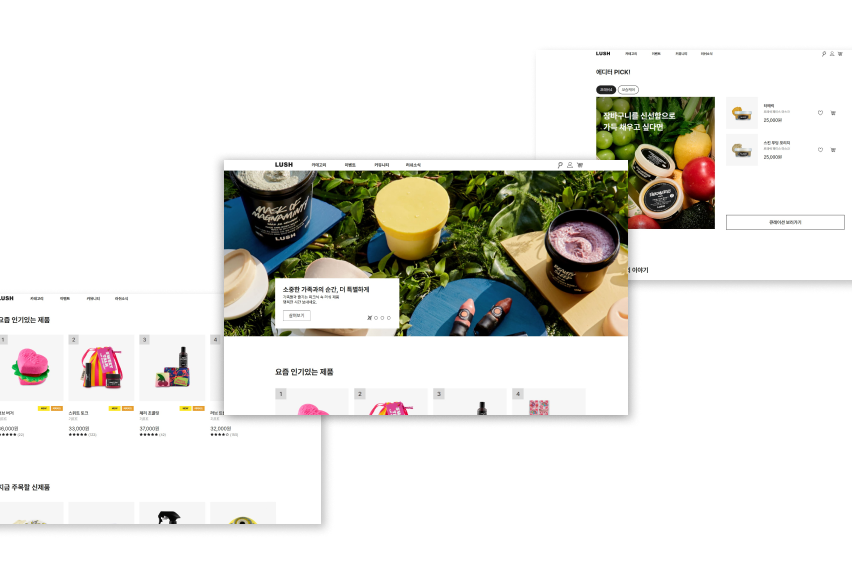
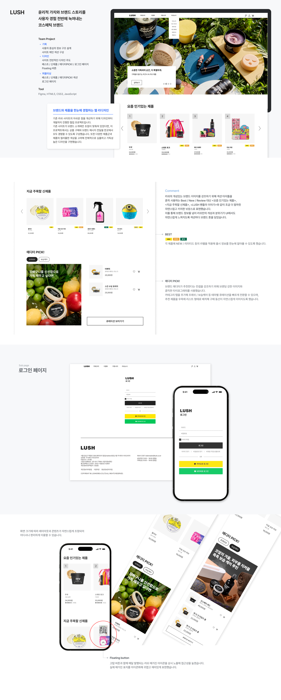

LUSH
기존 러쉬 사이트의 아쉬운 점을 개선하기 위해 디자인부터 개발까지 진행한 협업 프로젝트입니다. 사용자 경험을 최우선으로 전체 디자인 컨셉을 정하고 섹션별로 나누어 디자인과 개발을 진행하였습니다. 또한, 미디어쿼리를 활용해 PC·Tablet·Mobile에 대응하는 반응형 웹을 구현했으며, 시맨틱 태그와 JavaScript 탭 기능을 적용해 구조적이고 직관적인 사용자 경험을 제공하였습니다.
-
Category
Responsive Web
-
Tech Stack
HTML, CSS, JavaScript

